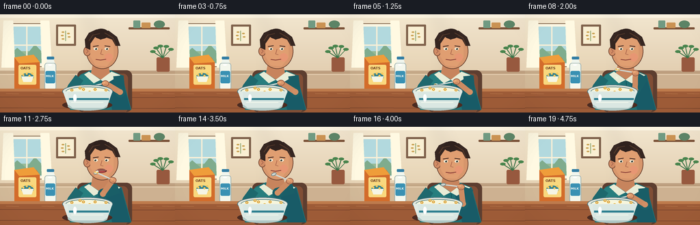
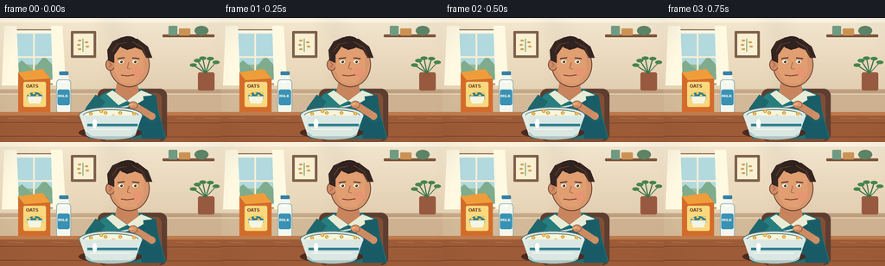

CODING AGENTS AS PIXEL WORLD MODELS
traex/GPT-5.6-Sol · motion_rationality_0018
点击播放 · 原生 RGB 像素
逐轮保存的候选
回放视频、检查图与代码变化。
每份候选均可单独播放。实际图片检查记录在下方工具轨迹中。
候选 01播放与检查图
点击播放 · 原生 RGB 像素


展开代码变化
--- 上一保存版本
+++ 本次保存版本
@@ -0,0 +1,315 @@
+from pathlib import Path
+import math
+import numpy as np
+from PIL import Image, ImageDraw, ImageFont, ImageFilter
+import artifact_io
+
+# Deterministic procedural 2D animation.
+CASE_DIR = Path(__file__).resolve().parent
+W, H, N = 256, 144, 20
+S = 4
+SW, SH = W*S, H*S
+
+def sc(v): return int(round(v*S))
+def pts(seq): return [(sc(x), sc(y)) for x, y in seq]
+
+def font(size, bold=False):
+ path = "/usr/share/fonts/truetype/dejavu/DejaVuSans-Bold.ttf" if bold else "/usr/share/fonts/truetype/dejavu/DejaVuSans.ttf"
+ try: return ImageFont.truetype(path, sc(size))
+ except: return ImageFont.load_default()
+
+F_SMALL = font(4.2, True)
+F_MILK = font(5.6, True)
+F_OATS = font(5.0, True)
+
+def ease(x):
+ x = max(0.0, min(1.0, x))
+ return x*x*(3-2*x)
+
+def lerp(a,b,t): return a+(b-a)*t
+
+def color_lerp(a,b,t): return tuple(round(lerp(a[i],b[i],t)) for i in range(3))
+
+def ellipse(d, box, fill, outline=None, width=1):
+ d.ellipse(tuple(sc(v) for v in box), fill=fill, outline=outline, width=sc(width) if outline else 1)
+
+def rectangle(d, box, fill, outline=None, width=1, radius=0):
+ b=tuple(sc(v) for v in box)
+ if radius: d.rounded_rectangle(b, radius=sc(radius), fill=fill, outline=outline, width=sc(width) if outline else 1)
+ else: d.rectangle(b, fill=fill, outline=outline, width=sc(width) if outline else 1)
+
+def line(d, seq, fill, width, joint='curve'):
+ d.line(pts(seq), fill=fill, width=sc(width), joint=joint)
+
+def polygon(d, seq, fill): d.polygon(pts(seq), fill=fill)
+
+def rotated_ellipse(layer, center, size, angle, fill, outline=None, width=1):
+ # Draw on a local transparent tile and rotate for a clean oriented spoon/food shape.
+ ww, hh = max(4, sc(size[0]+5)), max(4, sc(size[1]+5))
+ tile = Image.new('RGBA',(ww,hh),(0,0,0,0)); td=ImageDraw.Draw(tile)
+ td.ellipse((sc(2.5),sc(2.5),sc(2.5+size[0]),sc(2.5+size[1])), fill=fill, outline=outline, width=sc(width))
+ tile=tile.rotate(angle, resample=Image.Resampling.BICUBIC, expand=True)
+ layer.alpha_composite(tile,(sc(center[0])-tile.width//2,sc(center[1])-tile.height//2))
+
+def ik_elbow(shoulder, wrist, L1=24, L2=25):
+ sx,sy=shoulder; wx,wy=wrist
+ dx,dy=wx-sx,wy-sy; dist=max(1e-5, math.hypot(dx,dy))
+ d=min(dist,L1+L2-0.01)
+ a=(L1*L1-L2*L2+d*d)/(2*d)
+ h=math.sqrt(max(0,L1*L1-a*a))
+ ux,uy=dx/dist,dy/dist
+ bx,by=sx+a*ux,sy+a*uy
+ # Use left normal: for this shoulder/wrist arrangement it places elbow down/right.
+ e1=(bx-uy*h, by+ux*h); e2=(bx+uy*h, by-ux*h)
+ return max((e1,e2), key=lambda p:p[1]+0.22*p[0])
+
+def base_background():
+ # Soft warm morning wall gradient.
+ yy=np.linspace(0,1,SH)[:,None,None]
+ top=np.array([242,230,207],dtype=float); bot=np.array([216,190,156],dtype=float)
+ arr=np.tile((top*(1-yy)+bot*yy),(1,SW,1)).astype(np.uint8)
+ im=Image.fromarray(arr,'RGB').convert('RGBA'); d=ImageDraw.Draw(im)
+ # Ceiling / rear counter lines.
+ rectangle(d,(0,0,256,5),(250,242,224,255))
+ line(d,[(0,83),(256,83)],(179,147,116,255),1)
+ rectangle(d,(0,84,256,111),(188,157,125,255))
+ rectangle(d,(0,87,256,109),(205,177,145,255))
+ line(d,[(0,88),(256,88)],(232,211,181,255),1)
+ # Window with light blue outdoors and trim.
+ rectangle(d,(8,13,70,77),(252,246,228,255),(126,99,75,255),1.2,2)
+ rectangle(d,(13,18,65,72),(169,213,224,255))
+ # Sky gradient bands and vague landscape.
+ rectangle(d,(14,54,64,71),(137,179,143,255))
+ polygon(d,[(14,59),(25,49),(38,60),(51,44),(64,58),(64,71),(14,71)],(111,163,133,255))
+ line(d,[(39,18),(39,72)],(245,238,216,255),2)
+ line(d,[(13,45),(65,45)],(245,238,216,255),2)
+ # Sheer curtain.
+ polygon(d,[(5,9),(19,9),(22,78),(2,78)],(255,250,232,110))
+ polygon(d,[(59,9),(72,9),(76,78),(61,78)],(255,250,232,100))
+ # Floating shelf and kitchen objects.
+ rectangle(d,(188,19,248,22),(123,83,57,255),radius=1)
+ rectangle(d,(195,9,205,20),(112,154,130,255),radius=1)
+ rectangle(d,(207,12,220,20),(202,146,83,255),radius=1)
+ ellipse(d,(225,9,241,20),(92,132,102,255))
+ # Framed cereal-grain print.
+ rectangle(d,(82,15,111,46),(110,78,58,255),radius=1)
+ rectangle(d,(85,18,108,43),(248,238,211,255))
+ line(d,[(96,39),(96,24)],(113,145,87,255),1)
+ for x,y in [(92,26),(100,28),(91,31),(101,33),(92,36)]:
+ ellipse(d,(x-2,y-1,x+2,y+1),(196,153,70,255))
+ # Plant at far right.
+ rectangle(d,(229,63,248,84),(151,89,63,255),radius=2)
+ for a in [-58,-35,-12,18,45]:
+ cx,cy=238,64; ex=cx+17*math.sin(math.radians(a)); ey=cy-18*math.cos(math.radians(a))
+ line(d,[(cx,cy),(ex,ey)],(61,116,73,255),1.3)
+ ellipse(d,(ex-4,ey-2,ex+4,ey+2),(72,132,77,255))
+ # Fixed soft lighting veil.
+ glow=Image.new('RGBA',(SW,SH),(0,0,0,0)); gd=ImageDraw.Draw(glow)
+ gd.ellipse((sc(-35),sc(-28),sc(145),sc(147)),fill=(255,246,207,28))
+ glow=glow.filter(ImageFilter.GaussianBlur(sc(12))); im=Image.alpha_composite(im,glow)
+ return im
+
+BASE=base_background()
+
+def draw_package_props(im):
+ d=ImageDraw.Draw(im)
+ # Cereal carton on the table, clearly readable but not dominating.
+ polygon(d,[(21,63),(53,63),(58,70),(58,111),(21,111)],(211,108,43,255))
+ polygon(d,[(21,63),(49,59),(58,70),(28,72)],(239,157,58,255))
+ rectangle(d,(27,74,53,103),(249,216,126,255),radius=2)
+ # small bowl-of-cereal icon
+ ellipse(d,(31,86,49,97),(47,129,145,255))
+ polygon(d,[(31,91),(49,91),(46,99),(34,99)],(245,245,228,255))
+ # cereal rings
+ for x,y in [(34,89),(39,87),(43,90),(47,87)]:
+ ellipse(d,(x-1.6,y-1.6,x+1.6,y+1.6),(191,126,38,255),(244,190,75,255),1)
+ ellipse(d,(x-.5,y-.5,x+.5,y+.5),(247,223,143,255))
+ d.text((sc(30),sc(76)),"OATS",font=F_OATS,fill=(108,58,31,255))
+ # Milk bottle, white with blue label and cap.
+ rectangle(d,(65,71,82,111),(244,247,237,255),(156,177,176,255),1,4)
+ polygon(d,[(68,71),(69,65),(78,65),(80,71)],(240,245,237,255))
+ rectangle(d,(68.5,62,79,66),(51,126,164,255),radius=1)
+ rectangle(d,(66.5,83,80.5,101),(57,145,179,255),radius=2)
+ d.text((sc(67.1),sc(88)),"MILK",font=F_SMALL,fill=(250,250,242,255))
+ ellipse(d,(70,73,76,75),(255,255,255,145))
+
+def draw_person_and_scene(frame_i):
+ p=frame_i/(N-1)
+ im=BASE.copy(); d=ImageDraw.Draw(im)
+ draw_package_props(im)
+
+ # Table foreground with lip and fixed grain.
+ rectangle(d,(0,109,256,144),(139,79,50,255))
+ rectangle(d,(0,111,256,144),(157,91,55,255))
+ rectangle(d,(0,109,256,113),(190,123,76,255))
+ for y,alpha in [(121,60),(137,48)]: line(d,[(0,y),(256,y+1)],(102,56,39,alpha),.7)
+ for x in [9,61,205,237]:
+ line(d,[(x,116),(x+18,116.5)],(215,151,96,80),.6)
+
+ # Phase/timing. One clear and complete eating cycle.
+ if p < .20: # stirring/scooping
+ q=p/.20
+ tip=(122+4*math.sin(q*math.pi),108-1.8*math.sin(q*math.pi))
+ wrist=(154+1.5*math.sin(q*math.pi),101-1*math.sin(q*math.pi))
+ food_amt=ease(q)
+ elif p < .57: # lift spoon toward mouth
+ q=ease((p-.20)/.37)
+ tip=(lerp(125,141,q),lerp(107,67,q))
+ wrist=(lerp(155,165,q),lerp(100,78,q))
+ food_amt=1
+ elif p < .72: # bite and withdraw a touch
+ q=ease((p-.57)/.15)
+ tip=(lerp(141,145,q),lerp(67,69,q))
+ wrist=(lerp(165,168,q),lerp(78,79,q))
+ food_amt=max(0,1-q*1.6)
+ else: # lower to bowl
+ q=ease((p-.72)/.28)
+ tip=(lerp(145,124,q),lerp(69,108,q))
+ wrist=(lerp(168,154,q),lerp(79,101,q))
+ food_amt=0
+
+ near_mouth=ease((p-.43)/.14)*(1-ease((p-.74)/.10))
+ chew=ease((p-.68)/.06)*(1-ease((p-.96)/.04))
+ head_dip=1.8*near_mouth
+
+ # Chair behind person.
+ rectangle(d,(113,82,193,143),(93,62,48,255),radius=8)
+ rectangle(d,(119,87,187,144),(128,78,54,255),radius=7)
+
+ # Torso and shirt behind arms. Rich teal with folds.
+ polygon(d,[(118,88-head_dip*.15),(132,82-head_dip*.3),(162,82-head_dip*.3),(178,89),(192,140),(102,140),(109,99)],(31,112,116,255))
+ polygon(d,[(117,90),(130,84),(140,99),(132,140),(103,140),(109,101)],(39,126,126,255))
+ polygon(d,[(162,84),(177,89),(191,140),(164,140),(153,98)],(24,91,103,255))
+ line(d,[(148,98),(149,137)],(19,83,91,140),1)
+ line(d,[(120,112),(116,136)],(88,158,150,110),1)
+
+ # Neck, collar and neckline.
+ polygon(d,[(136,72-head_dip),(158,72-head_dip),(161,88),(148,96),(133,86)],(199,132,93,255))
+ polygon(d,[(130,84),(147,96),(137,101),(123,88)],(232,236,214,255))
+ polygon(d,[(163,84),(147,96),(156,101),(176,89)],(232,236,214,255))
+
+ # Left arm rests naturally beside and behind bowl.
+ line(d,[(116,93),(105,108),(112,115)],(30,104,109,255),14)
+ line(d,[(106,108),(114,115)],(210,146,106,255),8)
+ ellipse(d,(108,110,120,119),(218,153,110,255))
+
+ # Animated right arm using two-segment inverse kinematics.
+ shoulder=(173,90); elbow=ik_elbow(shoulder,wrist)
+ # Sleeve upper arm, then forearm/skin. Joint circles hide line seams.
+ line(d,[shoulder,elbow],(25,94,103,255),15)
+ ellipse(d,(elbow[0]-7.5,elbow[1]-7.5,elbow[0]+7.5,elbow[1]+7.5),(26,96,104,255))
+ line(d,[elbow,wrist],(205,139,98,255),8)
+ ellipse(d,(elbow[0]-4.2,elbow[1]-4.2,elbow[0]+4.2,elbow[1]+4.2),(209,143,101,255))
+
+ # Face with ear, soft shadow, and profile-neutral front view.
+ hy=-head_dip
+ ellipse(d,(126,28+hy,173,80+hy),(215,150,108,255),(103,65,48,255),1)
+ ellipse(d,(122,47+hy,133,61+hy),(209,140,101,255),(119,74,54,255),1)
+ # ear detail
+ line(d,[(126,51+hy),(129,54+hy),(126,57+hy)],(164,99,76,255),1)
+ # face warm light plane and cheek.
+ polygon(d,[(132,34+hy),(148,31+hy),(166,40+hy),(166,63+hy),(156,76+hy),(140,75+hy),(132,61+hy)],(224,158,113,255))
+ ellipse(d,(153,57+hy,165,69+hy),(231,150,115,90))
+ # Hair mass and strands.
+ polygon(d,[(125,49+hy),(124,37+hy),(130,27+hy),(141,22+hy),(159,24+hy),(171,33+hy),(176,46+hy),(169,46+hy),(164,37+hy),(156,34+hy),(147,37+hy),(139,33+hy),(132,43+hy),(132,52+hy)],(54,38,33,255))
+ ellipse(d,(137,21+hy,159,36+hy),(48,34,30,255))
+ line(d,[(130,39+hy),(136,30+hy),(146,28+hy)],(89,60,44,255),1)
+ line(d,[(153,27+hy),(165,34+hy),(169,45+hy)],(89,60,44,255),1)
+ # eyebrows.
+ line(d,[(136,47+hy),(144,45.8+hy)],(75,48,40,255),1.4)
+ line(d,[(153,46+hy),(161,47+hy)],(75,48,40,255),1.4)
+ # Blink near bite; otherwise eyes track spoon subtly.
+ blink=max(0,1-abs(p-.63)/.055)
+ ey=50.5+hy
+ if blink>.5:
+ line(d,[(136,ey),(143,ey+.5)],(59,43,38,255),1.3)
+ line(d,[(153,ey+.3),(160,ey)],(59,43,38,255),1.3)
+ else:
+ ellipse(d,(137,48.5+hy,143,52.5+hy),(250,246,225,255))
+ ellipse(d,(153,48.5+hy,159,52.5+hy),(250,246,225,255))
+ # pupils look down-left initially, toward spoon when raised
+ gaze=near_mouth
+ ellipse(d,(139-1*gaze,49.2+hy,141.8-1*gaze,52+hy),(45,52,45,255))
+ ellipse(d,(155-1*gaze,49.2+hy,157.8-1*gaze,52+hy),(45,52,45,255))
+ ellipse(d,(139.5-1*gaze,49.4+hy,140.3-1*gaze,50.2+hy),(255,255,245,255))
+ ellipse(d,(155.5-1*gaze,49.4+hy,156.3-1*gaze,50.2+hy),(255,255,245,255))
+ # Nose and mouth; opens as spoon arrives, closes to chew.
+ line(d,[(149,51+hy),(147,58+hy),(151,59+hy)],(173,104,77,255),1)
+ mouth_open=max(0, math.sin(min(1,max(0,(p-.43)/.27))*math.pi))*(1-.7*chew)
+ my=66+hy + (0.65*math.sin(p*25) if chew else 0)
+ if mouth_open>.15:
+ ellipse(d,(140,my-1.5-mouth_open*1.2,156,my+1.8+mouth_open*1.6),(106,44,42,255))
+ ellipse(d,(142,my+0.5,154,my+2.5),(190,75,76,255))
+ line(d,[(141,my-1),(155,my-1)],(239,190,164,255),.7)
+ else:
+ line(d,[(140,my),(147,my+1),(155,my-.2)],(129,55,51,255),1.2)
+ if chew>0: line(d,[(143,my+2),(152,my+2)],(195,102,83,255),.55)
+
+ # Bowl shadow first.
+ ellipse(d,(91,126,164,140),(75,43,33,95))
+ # Spoon handle and spoon head, in front of hand. Angle is vector direction.
+ vx,vy=tip[0]-wrist[0],tip[1]-wrist[1]
+ angle=math.degrees(math.atan2(vy,vx))
+ line(d,[wrist,tip],(199,207,203,255),2.1)
+ line(d,[(wrist[0],wrist[1]-.5),(tip[0],tip[1]-.5)],(247,250,241,255),.55)
+ # Spoon bowl lies along the tip direction.
+ spoon_layer=Image.new('RGBA',(SW,SH),(0,0,0,0))
+ rotated_ellipse(spoon_layer,tip,(8.0,4.8),angle,(204,213,210,255),(113,129,128,255),1)
+ im=Image.alpha_composite(im,spoon_layer); d=ImageDraw.Draw(im)
+
+ # Hand wrapped around handle with fingers.
+ ellipse(d,(wrist[0]-5.3,wrist[1]-4.3,wrist[0]+5.3,wrist[1]+4.7),(220,153,108,255),(152,92,69,255),1)
+ # Thumb follows handle.
+ ux,uy=(tip[0]-wrist[0],tip[1]-wrist[1]); ln=max(1,math.hypot(ux,uy)); ux/=ln; uy/=ln
+ line(d,[(wrist[0]-uy*1,wrist[1]+ux*1),(wrist[0]+ux*5-uy,wrist[1]+uy*5+ux)],(238,173,124,255),2)
+ line(d,[(wrist[0]-2,wrist[1]+2),(wrist[0]+2,wrist[1]+2)],(166,99,73,180),.55)
+
+ # Food on spoon while scooped: white milk with golden cereal rings.
+ if food_amt>.08:
+ food_layer=Image.new('RGBA',(SW,SH),(0,0,0,0))
+ rotated_ellipse(food_layer,(tip[0],tip[1]-0.4),(6.7,3.4),angle,(246,245,220,245),None,1)
+ im=Image.alpha_composite(im,food_layer); d=ImageDraw.Draw(im)
+ for ox,oy in [(-1.7,-.8),(1.4,.35)]:
+ x=tip[0]+ox; y=tip[1]+oy
+ ellipse(d,(x-1.25,y-1.25,x+1.25,y+1.25),(206,145,49,255),(245,197,86,255),.6)
+ ellipse(d,(x-.42,y-.42,x+.42,y+.42),(245,235,190,255))
+ # A single rational milk drip during the upward acceleration.
+ if .30 < p < .45:
+ drip_t=(p-.30)/.15
+ dx=tip[0]-1; dy=tip[1]+4+9*drip_t
+ ellipse(d,(dx-1,dy-1.5,dx+1,dy+1.5),(241,243,222,230))
+
+ # Large ceramic bowl in foreground, occluding low spoon and hands correctly.
+ # Outer rim, milk interior, then bowl body.
+ ellipse(d,(91,103,165,123),(225,229,218,255),(67,112,123,255),1)
+ ellipse(d,(96,106,160,120),(247,246,220,255),(86,127,132,255),1)
+ # floating cereal rings in visible milk; fixed locations preserve continuity.
+ cereals=[(105,111,0),(113,115,0),(122,110,0),(131,114,0),(139,110,0),(148,115,0),(155,111,0),(117,108,0),(143,117,0)]
+ for x,y,_ in cereals:
+ ellipse(d,(x-2.2,y-2.0,x+2.2,y+2.0),(200,137,44,255),(239,185,70,255),.7)
+ ellipse(d,(x-.75,y-.7,x+.75,y+.7),(247,242,207,255))
+ # bowl front.
+ polygon(d,[(92,113),(164,113),(157,134),(151,138),(106,138),(99,133)],(225,235,228,255))
+ ellipse(d,(99,128,157,141),(176,200,197,255))
+ polygon(d,[(99,114),(164,114),(157,133),(151,137),(106,137),(100,132)],(218,231,226,255))
+ # blue band and glossy highlight.
+ line(d,[(101,124),(159,124)],(47,128,145,255),3)
+ line(d,[(104,129),(151,129)],(244,249,238,150),1)
+ ellipse(d,(107,117,112,128),(255,255,255,115))
+
+ # Lower spoon disappears into bowl naturally in scoop/return states by bowl occlusion above.
+ # Very subtle global vignette for visual focus.
+ vig=np.zeros((SH,SW,4),dtype=np.uint8)
+ Y,X=np.ogrid[:SH,:SW]; cx,cy=SW*.52,SH*.49
+ rr=((X-cx)/(SW*.72))**2+((Y-cy)/(SH*.90))**2
+ vig[...,3]=np.clip((rr-.42)*22,0,18).astype(np.uint8)
+ im=Image.alpha_composite(im,Image.fromarray(vig,'RGBA'))
+ return np.asarray(im.convert('RGB').resize((W,H),Image.Resampling.LANCZOS),dtype=np.uint8)
+
+def main():
+ frames=np.stack([draw_person_and_scene(i) for i in range(N)],axis=0)
+ assert frames.shape==(N,H,W,3) and frames.dtype==np.uint8
+ artifact_io.save(frames,CASE_DIR)
+ print(f"saved {len(frames)} frames: {frames.shape}, {frames.dtype}")
+
+if __name__=='__main__': main()
可观测工具轨迹
实际执行的命令与返回图片。
命令 1exit 0
/bin/bash -lc "cat prompt.txt && printf '\\n--- GENERATION_RULES ---\\n' && cat GENERATION_RULES.md"
命令 2exit 0
/bin/bash -lc "cat task_spec.json && printf '\\n--- FILES ---\\n' && find . -maxdepth 2 -type f -printf '%p\\n' | sort"
命令 3exit 0
/bin/bash -lc "command -v ffmpeg; command -v ffprobe; python3 - <<'PY' mods=['PIL','numpy','cv2','imageio'] for m in mods: try: x=__import__(m); print(m, getattr(x,'__version__','ok')) except Exception as e: print(m,'MISSING',e) PY"
命令 4exit 0
/bin/bash -lc 'cat artifact_io.py'
命令 5exit 0
/bin/bash -lc "cat > generate.py <<'PY'
from pathlib import Path
import math
import numpy as np
from PIL import Image, ImageDraw, ImageFont, ImageFilter
import artifact_io
# Deterministic procedural 2D animation.
CASE_DIR = Path(__file__).resolve().parent
W, H, N = 256, 144, 20
S = 4
SW, SH = W*S, H*S
def sc(v): return int(round(v*S))
def pts(seq): return [(sc(x), sc(y)) for x, y in seq]
def font(size, bold=False):
path = \"/usr/share/fonts/truetype/dejavu/DejaVuSans-Bold.ttf\" if bold else \"/usr/share/fonts/truetype/dejavu/DejaVuSans.ttf\"
try: return ImageFont.truetype(path, sc(size))
except: return ImageFont.load_default()
F_SMALL = font(4.2, True)
F_MILK = font(5.6, True)
F_OATS = font(5.0, True)
def ease(x):
x = max(0.0, min(1.0, x))
return x*x*(3-2*x)
def lerp(a,b,t): return a+(b-a)*t
def color_lerp(a,b,t): return tuple(round(lerp(a[i],b[i],t)) for i in range(3))
def ellipse(d, box, fill, outline=None, width=1):
d.ellipse(tuple(sc(v) for v in box), fill=fill, outline=outline, width=sc(width) if outline else 1)
def rectangle(d, box, fill, outline=None, width=1, radius=0):
b=tuple(sc(v) for v in box)
if radius: d.rounded_rectangle(b, radius=sc(radius), fill=fill, outline=outline, width=sc(width) if outline else 1)
else: d.rectangle(b, fill=fill, outline=outline, width=sc(width) if outline else 1)
def line(d, seq, fill, width, joint='curve'):
d.line(pts(seq), fill=fill, width=sc(width), joint=joint)
def polygon(d, seq, fill): d.polygon(pts(seq), fill=fill)
def rotated_ellipse(layer, center, size, angle, fill, outline=None, width=1):
# Draw on a local transparent tile and rotate for a clean oriented spoon/food shape.
ww, hh = max(4, sc(size[0]+5)), max(4, sc(size[1]+5))
tile = Image.new('RGBA',(ww,hh),(0,0,0,0)); td=ImageDraw.Draw(tile)
td.ellipse((sc(2.5),sc(2.5),sc(2.5+size[0]),sc(2.5+size[1])), fill=fill, outline=outline, width=sc(width))
tile=tile.rotate(angle, resample=Image.Resampling.BICUBIC, expand=True)
layer.alpha_composite(tile,(sc(center[0])-tile.width//2,sc(center[1])-tile.height//2))
def ik_elbow(shoulder, wrist, L1=24, L2=25):
sx,sy=shoulder; wx,wy=wrist
dx,dy=wx-sx,wy-sy; dist=max(1e-5, math.hypot(dx,dy))
d=min(dist,L1+L2-0.01)
a=(L1*L1-L2*L2+d*d)/(2*d)
h=math.sqrt(max(0,L1*L1-a*a))
ux,uy=dx/dist,dy/dist
bx,by=sx+a*ux,sy+a*uy
# Use left normal: for this shoulder/wrist arrangement it places elbow down/right.
e1=(bx-uy*h, by+ux*h); e2=(bx+uy*h, by-ux*h)
return max((e1,e2), key=lambda p:p[1]+0.22*p[0])
def base_background():
# Soft warm morning wall gradient.
yy=np.linspace(0,1,SH)[:,None,None]
top=np.array([242,230,207],dtype=float); bot=np.array([216,190,156],dtype=float)
arr=np.tile((top*(1-yy)+bot*yy),(1,SW,1)).astype(np.uint8)
im=Image.fromarray(arr,'RGB').convert('RGBA'); d=ImageDraw.Draw(im)
# Ceiling / rear counter lines.
rectangle(d,(0,0,256,5),(250,242,224,255))
line(d,[(0,83),(256,83)],(179,147,116,255),1)
rectangle(d,(0,84,256,111),(188,157,125,255))
rectangle(d,(0,87,256,109),(205,177,145,255))
line(d,[(0,88),(256,88)],(232,211,181,255),1)
# Window with light blue outdoors and trim.
rectangle(d,(8,13,70,77),(252,246,228,255),(126,99,75,255),1.2,2)
rectangle(d,(13,18,65,72),(169,213,224,255))
# Sky gradient bands and vague landscape.
rectangle(d,(14,54,64,71),(137,179,143,255))
polygon(d,[(14,59),(25,49),(38,60),(51,44),(64,58),(64,71),(14,71)],(111,163,133,255))
line(d,[(39,18),(39,72)],(245,238,216,255),2)
line(d,[(13,45),(65,45)],(245,238,216,255),2)
# Sheer curtain.
polygon(d,[(5,9),(19,9),(22,78),(2,78)],(255,250,232,110))
polygon(d,[(59,9),(72,9),(76,78),(61,78)],(255,250,232,100))
# Floating shelf and kitchen objects.
rectangle(d,(188,19,248,22),(123,83,57,255),radius=1)
rectangle(d,(195,9,205,20),(112,154,130,255),radius=1)
rectangle(d,(207,12,220,20),(202,146,83,255),radius=1)
ellipse(d,(225,9,241,20),(92,132,102,255))
# Framed cereal-grain print.
rectangle(d,(82,15,111,46),(110,78,58,255),radius=1)
rectangle(d,(85,18,108,43),(248,238,211,255))
line(d,[(96,39),(96,24)],(113,145,87,255),1)
for x,y in [(92,26),(100,28),(91,31),(101,33),(92,36)]:
ellipse(d,(x-2,y-1,x+2,y+1),(196,153,70,255))
# Plant at far right.
rectangle(d,(229,63,248,84),(151,89,63,255),radius=2)
for a in [-58,-35,-12,18,45]:
cx,cy=238,64; ex=cx+17*math.sin(math.radians(a)); ey=cy-18*math.cos(math.radians(a))
line(d,[(cx,cy),(ex,ey)],(61,116,73,255),1.3)
ellipse(d,(ex-4,ey-2,ex+4,ey+2),(72,132,77,255))
# Fixed soft lighting veil.
glow=Image.new('RGBA',(SW,SH),(0,0,0,0)); gd=ImageDraw.Draw(glow)
gd.ellipse((sc(-35),sc(-28),sc(145),sc(147)),fill=(255,246,207,28))
glow=glow.filter(ImageFilter.GaussianBlur(sc(12))); im=Image.alpha_composite(im,glow)
return im
BASE=base_background()
def draw_package_props(im):
d=ImageDraw.Draw(im)
# Cereal carton on the table, clearly readable but not dominating.
polygon(d,[(21,63),(53,63),(58,70),(58,111),(21,111)],(211,108,43,255))
polygon(d,[(21,63),(49,59),(58,70),(28,72)],(239,157,58,255))
rectangle(d,(27,74,53,103),(249,216,126,255),radius=2)
# small bowl-of-cereal icon
ellipse(d,(31,86,49,97),(47,129,145,255))
polygon(d,[(31,91),(49,91),(46,99),(34,99)],(245,245,228,255))
# cereal rings
for x,y in [(34,89),(39,87),(43,90),(47,87)]:
ellipse(d,(x-1.6,y-1.6,x+1.6,y+1.6),(191,126,38,255),(244,190,75,255),1)
ellipse(d,(x-.5,y-.5,x+.5,y+.5),(247,223,143,255))
d.text((sc(30),sc(76)),\"OATS\",font=F_OATS,fill=(108,58,31,255))
# Milk bottle, white with blue label and cap.
rectangle(d,(65,71,82,111),(244,247,237,255),(156,177,176,255),1,4)
polygon(d,[(68,71),(69,65),(78,65),(80,71)],(240,245,237,255))
rectangle(d,(68.5,62,79,66),(51,126,164,255),radius=1)
rectangle(d,(66.5,83,80.5,101),(57,145,179,255),radius=2)
d.text((sc(67.1),sc(88)),\"MILK\",font=F_SMALL,fill=(250,250,242,255))
ellipse(d,(70,73,76,75),(255,255,255,145))
def draw_person_and_scene(frame_i):
p=frame_i/(N-1)
im=BASE.copy(); d=ImageDraw.Draw(im)
draw_package_props(im)
# Table foreground with lip and fixed grain.
rectangle(d,(0,109,256,144),(139,79,50,255))
rectangle(d,(0,111,256,144),(157,91,55,255))
rectangle(d,(0,109,256,113),(190,123,76,255))
for y,alpha in [(121,60),(137,48)]: line(d,[(0,y),(256,y+1)],(102,56,39,alpha),.7)
for x in [9,61,205,237]:
line(d,[(x,116),(x+18,116.5)],(215,151,96,80),.6)
# Phase/timing. One clear and complete eating cycle.
if p < .20: # stirring/scooping
q=p/.20
tip=(122+4*math.sin(q*math.pi),108-1.8*math.sin(q*math.pi))
wrist=(154+1.5*math.sin(q*math.pi),101-1*math.sin(q*math.pi))
food_amt=ease(q)
elif p < .57: # lift spoon toward mouth
q=ease((p-.20)/.37)
tip=(lerp(125,141,q),lerp(107,67,q))
wrist=(lerp(155,165,q),lerp(100,78,q))
food_amt=1
elif p < .72: # bite and withdraw a touch
q=ease((p-.57)/.15)
tip=(lerp(141,145,q),lerp(67,69,q))
wrist=(lerp(165,168,q),lerp(78,79,q))
food_amt=max(0,1-q*1.6)
else: # lower to bowl
q=ease((p-.72)/.28)
tip=(lerp(145,124,q),lerp(69,108,q))
wrist=(lerp(168,154,q),lerp(79,101,q))
food_amt=0
near_mouth=ease((p-.43)/.14)*(1-ease((p-.74)/.10))
chew=ease((p-.68)/.06)*(1-ease((p-.96)/.04))
head_dip=1.8*near_mouth
# Chair behind person.
rectangle(d,(113,82,193,143),(93,62,48,255),radius=8)
rectangle(d,(119,87,187,144),(128,78,54,255),radius=7)
# Torso and shirt behind arms. Rich teal with folds.
polygon(d,[(118,88-head_dip*.15),(132,82-head_dip*.3),(162,82-head_dip*.3),(178,89),(192,140),(102,140),(109,99)],(31,112,116,255))
polygon(d,[(117,90),(130,84),(140,99),(132,140),(103,140),(109,101)],(39,126,126,255))
polygon(d,[(162,84),(177,89),(191,140),(164,140),(153,98)],(24,91,103,255))
line(d,[(148,98),(149,137)],(19,83,91,140),1)
line(d,[(120,112),(116,136)],(88,158,150,110),1)
# Neck, collar and neckline.
polygon(d,[(136,72-head_dip),(158,72-head_dip),(161,88),(148,96),(133,86)],(199,132,93,255))
polygon(d,[(130,84),(147,96),(137,101),(123,88)],(232,236,214,255))
polygon(d,[(163,84),(147,96),(156,101),(176,89)],(232,236,214,255))
# Left arm rests naturally beside and behind bowl.
line(d,[(116,93),(105,108),(112,115)],(30,104,109,255),14)
line(d,[(106,108),(114,115)],(210,146,106,255),8)
ellipse(d,(108,110,120,119),(218,153,110,255))
# Animated right arm using two-segment inverse kinematics.
shoulder=(173,90); elbow=ik_elbow(shoulder,wrist)
# Sleeve upper arm, then forearm/skin. Joint circles hide line seams.
line(d,[shoulder,elbow],(25,94,103,255),15)
ellipse(d,(elbow[0]-7.5,elbow[1]-7.5,elbow[0]+7.5,elbow[1]+7.5),(26,96,104,255))
line(d,[elbow,wrist],(205,139,98,255),8)
ellipse(d,(elbow[0]-4.2,elbow[1]-4.2,elbow[0]+4.2,elbow[1]+4.2),(209,143,101,255))
# Face with ear, soft shadow, and profile-neutral front view.
hy=-head_dip
ellipse(d,(126,28+hy,173,80+hy),(215,150,108,255),(103,65,48,255),1)
ellipse(d,(122,47+hy,133,61+hy),(209,140,101,255),(119,74,54,255),1)
# ear detail
line(d,[(126,51+hy),(129,54+hy),(126,57+hy)],(164,99,76,255),1)
# face warm light plane and cheek.
polygon(d,[(132,34+hy),(148,31+hy),(166,40+hy),(166,63+hy),(156,76+hy),(140,75+hy),(132,61+hy)],(224,158,113,255))
ellipse(d,(153,57+hy,165,69+hy),(231,150,115,90))
# Hair mass and strands.
polygon(d,[(125,49+hy),(124,37+hy),(130,27+hy),(141,22+hy),(159,24+hy),(171,33+hy),(176,46+hy),(169,46+hy),(164,37+hy),(156,34+hy),(147,37+hy),(139,33+hy),(132,43+hy),(132,52+hy)],(54,38,33,255))
ellipse(d,(137,21+hy,159,36+hy),(48,34,30,255))
line(d,[(130,39+hy),(136,30+hy),(146,28+hy)],(89,60,44,255),1)
line(d,[(153,27+hy),(165,34+hy),(169,45+hy)],(89,60,44,255),1)
# eyebrows.
line(d,[(136,47+hy),(144,45.8+hy)],(75,48,40,255),1.4)
line(d,[(153,46+hy),(161,47+hy)],(75,48,40,255),1.4)
# Blink near bite; otherwise eyes track spoon subtly.
blink=max(0,1-abs(p-.63)/.055)
ey=50.5+hy
if blink>.5:
line(d,[(136,ey),(143,ey+.5)],(59,43,38,255),1.3)
line(d,[(153,ey+.3),(160,ey)],(59,43,38,255),1.3)
else:
ellipse(d,(137,48.5+hy,143,52.5+hy),(250,246,225,255))
ellipse(d,(153,48.5+hy,159,52.5+hy),(250,246,225,255))
# pupils look down-left initially, toward spoon when raised
gaze=near_mouth
ellipse(d,(139-1*gaze,49.2+hy,141.8-1*gaze,52+hy),(45,52,45,255))
ellipse(d,(155-1*gaze,49.2+hy,157.8-1*gaze,52+hy),(45,52,45,255))
ellipse(d,(139.5-1*gaze,49.4+hy,140.3-1*gaze,50.2+hy),(255,255,245,255))
ellipse(d,(155.5-1*gaze,49.4+hy,156.3-1*gaze,50.2+hy),(255,255,245,255))
# Nose and mouth; opens as spoon arrives, closes to chew.
line(d,[(149,51+hy),(147,58+hy),(151,59+hy)],(173,104,77,255),1)
mouth_open=max(0, math.sin(min(1,max(0,(p-.43)/.27))*math.pi))*(1-.7*chew)
my=66+hy + (0.65*math.sin(p*25) if chew else 0)
if mouth_open>.15:
ellipse(d,(140,my-1.5-mouth_open*1.2,156,my+1.8+mouth_open*1.6),(106,44,42,255))
ellipse(d,(142,my+0.5,154,my+2.5),(190,75,76,255))
line(d,[(141,my-1),(155,my-1)],(239,190,164,255),.7)
else:
line(d,[(140,my),(147,my+1),(155,my-.2)],(129,55,51,255),1.2)
if chew>0: line(d,[(143,my+2),(152,my+2)],(195,102,83,255),.55)
# Bowl shadow first.
ellipse(d,(91,126,164,140),(75,43,33,95))
# Spoon handle and spoon head, in front of hand. Angle is vector direction.
vx,vy=tip[0]-wrist[0],tip[1]-wrist[1]
angle=math.degrees(math.atan2(vy,vx))
line(d,[wrist,tip],(199,207,203,255),2.1)
line(d,[(wrist[0],wrist[1]-.5),(tip[0],tip[1]-.5)],(247,250,241,255),.55)
# Spoon bowl lies along the tip direction.
spoon_layer=Image.new('RGBA',(SW,SH),(0,0,0,0))
rotated_ellipse(spoon_layer,tip,(8.0,4.8),angle,(204,213,210,255),(113,129,128,255),1)
im=Image.alpha_composite(im,spoon_layer); d=ImageDraw.Draw(im)
# Hand wrapped around handle with fingers.
ellipse(d,(wrist[0]-5.3,wrist[1]-4.3,wrist[0]+5.3,wrist[1]+4.7),(220,153,108,255),(152,92,69,255),1)
# Thumb follows handle.
ux,uy=(tip[0]-wrist[0],tip[1]-wrist[1]); ln=max(1,math.hypot(ux,uy)); ux/=ln; uy/=ln
line(d,[(wrist[0]-uy*1,wrist[1]+ux*1),(wrist[0]+ux*5-uy,wrist[1]+uy*5+ux)],(238,173,124,255),2)
line(d,[(wrist[0]-2,wrist[1]+2),(wrist[0]+2,wrist[1]+2)],(166,99,73,180),.55)
# Food on spoon while scooped: white milk with golden cereal rings.
if food_amt>.08:
food_layer=Image.new('RGBA',(SW,SH),(0,0,0,0))
rotated_ellipse(food_layer,(tip[0],tip[1]-0.4),(6.7,3.4),angle,(246,245,220,245),None,1)
im=Image.alpha_composite(im,food_layer); d=ImageDraw.Draw(im)
for ox,oy in [(-1.7,-.8),(1.4,.35)]:
x=tip[0]+ox; y=tip[1]+oy
ellipse(d,(x-1.25,y-1.25,x+1.25,y+1.25),(206,145,49,255),(245,197,86,255),.6)
ellipse(d,(x-.42,y-.42,x+.42,y+.42),(245,235,190,255))
# A single rational milk drip during the upward acceleration.
if .30 < p < .45:
drip_t=(p-.30)/.15
dx=tip[0]-1; dy=tip[1]+4+9*drip_t
ellipse(d,(dx-1,dy-1.5,dx+1,dy+1.5),(241,243,222,230))
# Large ceramic bowl in foreground, occluding low spoon and hands correctly.
# Outer rim, milk interior, then bowl body.
ellipse(d,(91,103,165,123),(225,229,218,255),(67,112,123,255),1)
ellipse(d,(96,106,160,120),(247,246,220,255),(86,127,132,255),1)
# floating cereal rings in visible milk; fixed locations preserve continuity.
cereals=[(105,111,0),(113,115,0),(122,110,0),(131,114,0),(139,110,0),(148,115,0),(155,111,0),(117,108,0),(143,117,0)]
for x,y,_ in cereals:
ellipse(d,(x-2.2,y-2.0,x+2.2,y+2.0),(200,137,44,255),(239,185,70,255),.7)
ellipse(d,(x-.75,y-.7,x+.75,y+.7),(247,242,207,255))
# bowl front.
polygon(d,[(92,113),(164,113),(157,134),(151,138),(106,138),(99,133)],(225,235,228,255))
ellipse(d,(99,128,157,141),(176,200,197,255))
polygon(d,[(99,114),(164,114),(157,133),(151,137),(106,137),(100,132)],(218,231,226,255))
# blue band and glossy highlight.
line(d,[(101,124),(159,124)],(47,128,145,255),3)
line(d,[(104,129),(151,129)],(244,249,238,150),1)
ellipse(d,(107,117,112,128),(255,255,255,115))
# Lower spoon disappears into bowl naturally in scoop/return states by bowl occlusion above.
# Very subtle global vignette for visual focus.
vig=np.zeros((SH,SW,4),dtype=np.uint8)
Y,X=np.ogrid[:SH,:SW]; cx,cy=SW*.52,SH*.49
rr=((X-cx)/(SW*.72))**2+((Y-cy)/(SH*.90))**2
vig[...,3]=np.clip((rr-.42)*22,0,18).astype(np.uint8)
im=Image.alpha_composite(im,Image.fromarray(vig,'RGBA'))
return np.asarray(im.convert('RGB').resize((W,H),Image.Resampling.LANCZOS),dtype=np.uint8)
def main():
frames=np.stack([draw_person_and_scene(i) for i in range(N)],axis=0)
assert frames.shape==(N,H,W,3) and frames.dtype==np.uint8
artifact_io.save(frames,CASE_DIR)
print(f\"saved {len(frames)} frames: {frames.shape}, {frames.dtype}\")
if __name__=='__main__': main()
PY
python3 generate.py"命令 6exit 0
/bin/bash -lc "find . -maxdepth 2 -type f -printf '%p %s bytes\\n' | sort"
命令 7exit 0
/bin/bash -lc "python3 -m py_compile generate.py && python3 - <<'PY'
from pathlib import Path
import numpy as np
from PIL import Image
p=Path('.')
z=np.load('pixels.npz')['pixels']
assert z.shape==(144,256,20),z.shape
fs=[]
for i in range(20):
a=np.array(Image.open(p/'frames'/f'{i:02d}.png'))
assert a.shape==(144,256,3) and a.dtype==np.uint8
packed=(a[...,0].astype(np.uint32)<<16)|(a[...,1].astype(np.uint32)<<8)|a[...,2]
assert np.array_equal(packed,z[:,:,i])
fs.append(a)
f=np.stack(fs)
d=np.abs(np.diff(f.astype(np.int16),axis=0))
changed=np.mean(np.any(d>0,axis=3),axis=(1,2))
mad=np.mean(d,axis=(1,2,3))
print('frames',f.shape,f.dtype)
print('changed fractions',np.round(changed,4).tolist())
print('mean abs deltas',np.round(mad,3).tolist())
print('range',int(f.min()),int(f.max()),'npz_bytes',Path('pixels.npz').stat().st_size)
assert np.all(changed>.005) and np.max(mad)<12
print('VALID')
PY"保存候选 1 份；完成命令 7 次；可验证图片返回 0 张。原始 API 响应与完整日志保留在本地。